Abstract
Immersive audio for virtual and augmented reality needs accurate, low-latency rendering of sound fields across large areas. Physics-based simulations and centralized deep learning models struggle with scalability, data efficiency and robustness when measurements are sparse, and usually need retraining whenever new measurements arrive. DAME (Distributed Acoustic Mixture-of-Experts) splits the global reconstruction task into local sub-problems: each region is handled by a compact neural expert trained on its own data, and a lightweight gating network combines their predictions for any queried position. New experts can be added for newly measured regions by updating only the gate, so the model grows without forgetting.
Method
The measured space is partitioned into K receiver regions. Each expert learns the mapping from Fourier-embedded receiver coordinates to the normalized HOA room impulse responses of its region; the gating network estimates how much each expert should contribute at a given position, producing a consistent global reconstruction.
The paper makes three contributions: a distributed mixture-of-experts for large-area HOA sound fields, a Fourier-feature embedding of receiver coordinates that needs no environment-specific parameters, and an incremental expansion protocol that adds new measurement regions without retraining the full model.
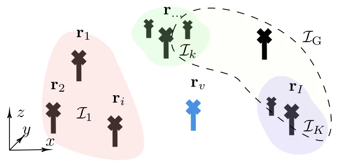
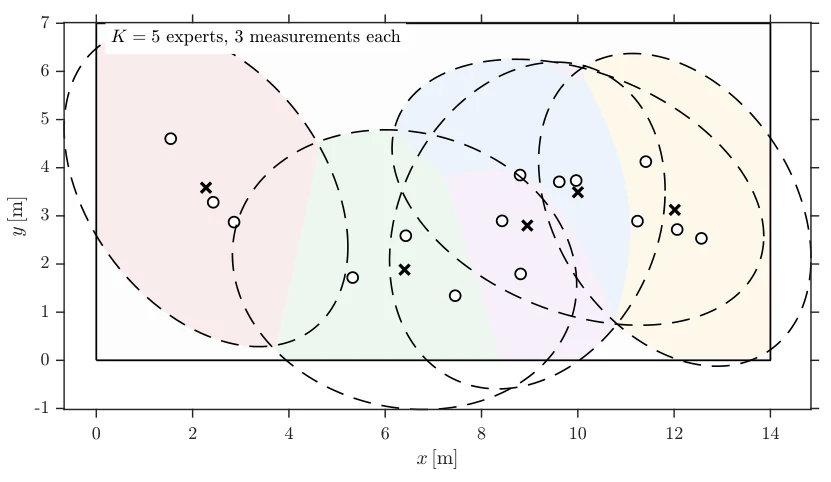
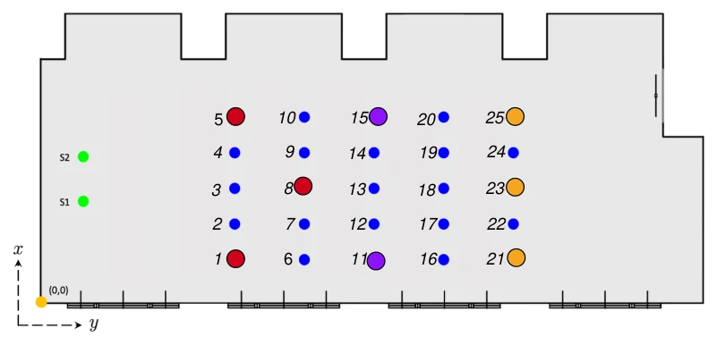
Results
DAME was evaluated on simulated data and on real-world HOA RIRs from the HOMULA-RIR dataset [2], against parametric virtual miking (PVM) [3], physics-constrained kernel interpolation (PCKI) [4] and a physics-informed neural network (PINN) [5]. It achieves the lowest reconstruction error, direction-of-arrival error and DRR error, and keeps its advantage across spherical-harmonic orders.
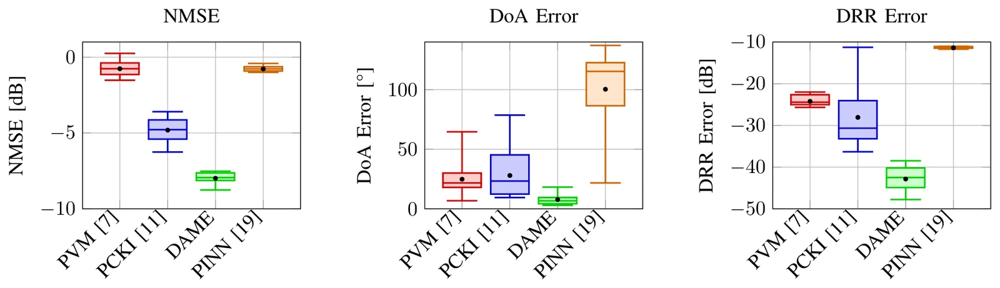
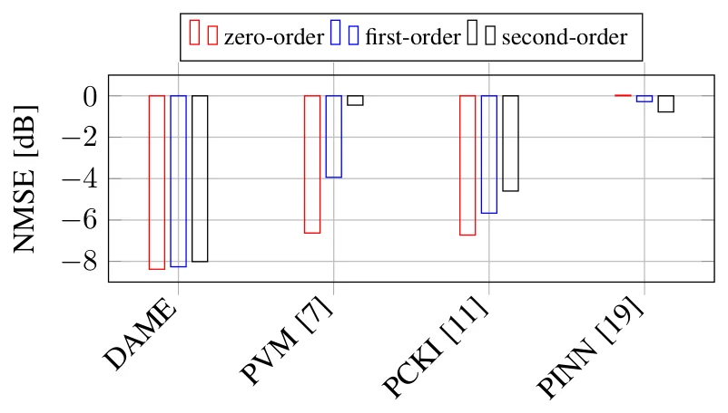
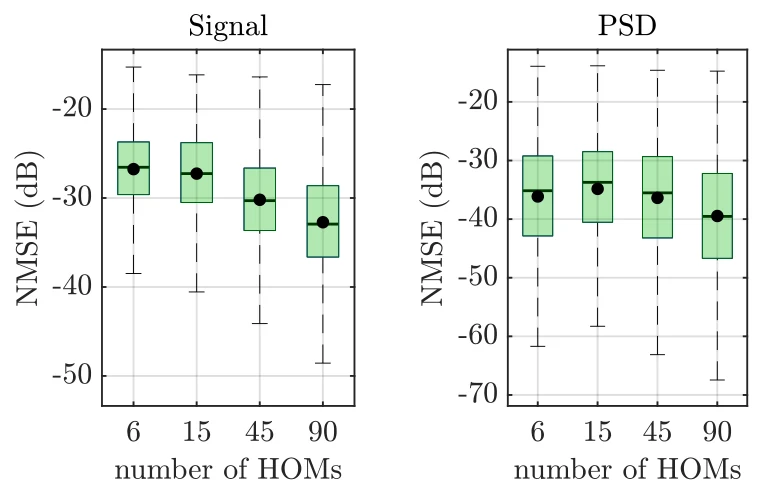
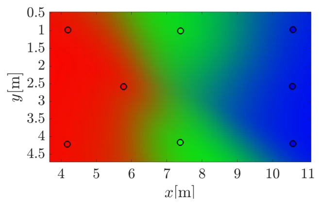
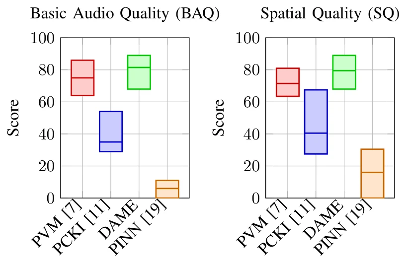
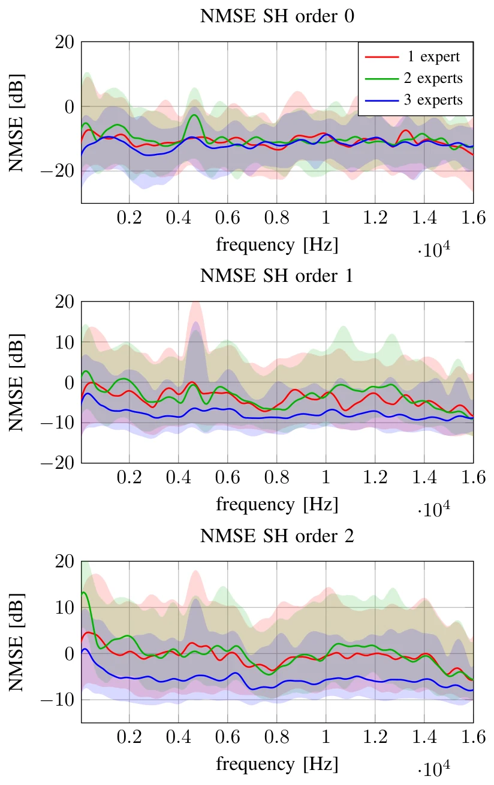
Audio demonstrations
Use headphones: the spatial differences between methods are much easier to hear.
Source 1 · Position 1
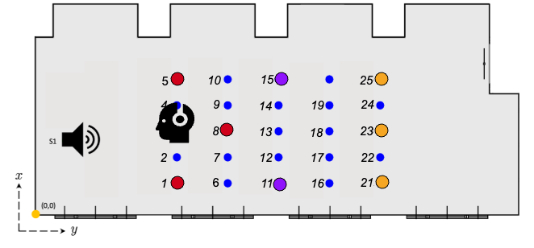
Source 1 · Position 2
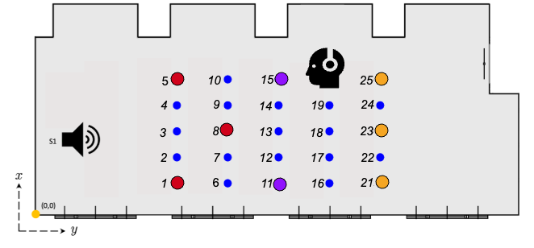
Source 2 · Position 1
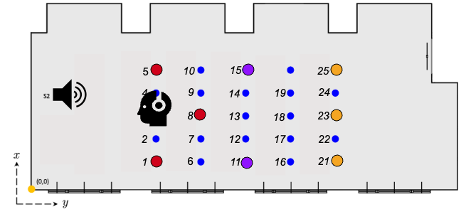
Source 2 · Position 2
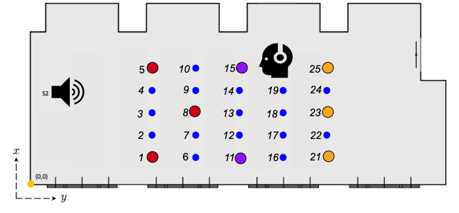
Cite this work
G. Greco, D. Zhang, M. Pezzoli, and F. Antonacci, “Distributed Acoustic Mixture-of-Experts for Spatial Sound Estimation,” IEEE Open Journal of Signal Processing, vol. 7, pp. 569–580, 2026. doi: 10.1109/OJSP.2026.3693608
@article{greco2026dame,
title = {Distributed Acoustic Mixture-of-Experts for Spatial Sound Estimation},
author = {Greco, Gioele and Zhang, Dongzhe and Pezzoli, Mirco and Antonacci, Fabio},
journal = {IEEE Open Journal of Signal Processing},
volume = {7},
pages = {569--580},
year = {2026},
doi = {10.1109/OJSP.2026.3693608}
}Selected references
- [1]S. Giacomelli et al., “Remote immersive audio production: State of the art implementation, challenges, and improvements,” Proc. IEEE Int. Symp. Internet of Sounds, 2024.
- [2]F. Miotello et al., “HOMULA-RIR: A room impulse response dataset for teleconferencing and spatial audio applications acquired through higher-order microphones and uniform linear microphone arrays,” Proc. IEEE ICASSP Workshops, 2024. doi: 10.1109/ICASSPW62465.2024.10626753
- [3]M. Pezzoli, F. Borra, F. Antonacci, S. Tubaro, and A. Sarti, “A parametric approach to virtual miking for sources of arbitrary directivity,” IEEE/ACM TASLP, vol. 28, pp. 2333–2348, 2020.
- [4]J. G. C. Ribeiro, S. Koyama, R. Horiuchi, and H. Saruwatari, “Sound field estimation based on physics-constrained kernel interpolation adapted to environment,” IEEE/ACM TASLP, vol. 32, pp. 4369–4383, 2024.
- [5]X. Karakonstantis, D. Caviedes-Nozal, A. Richard, and E. Fernandez-Grande, “Room impulse response reconstruction with physics-informed deep learning,” J. Acoust. Soc. Am., vol. 155, pp. 1048–1059, 2024.